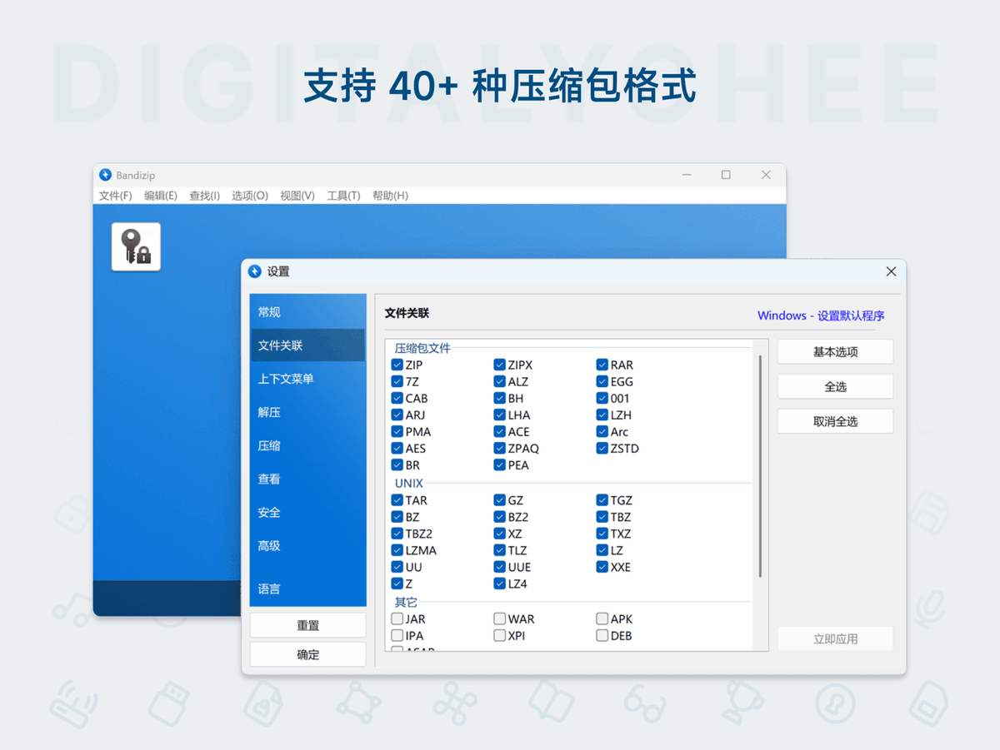
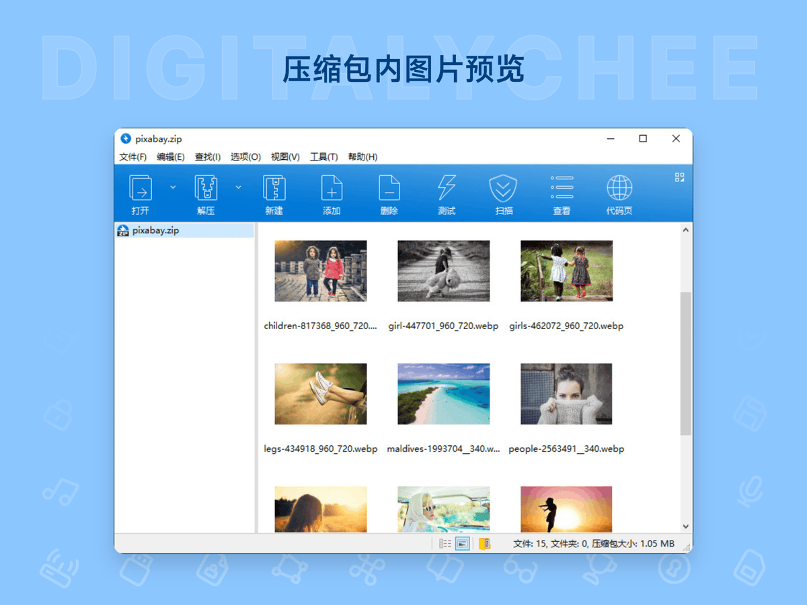
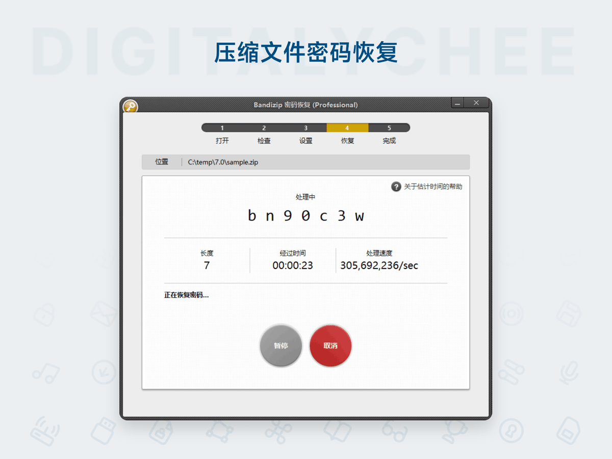
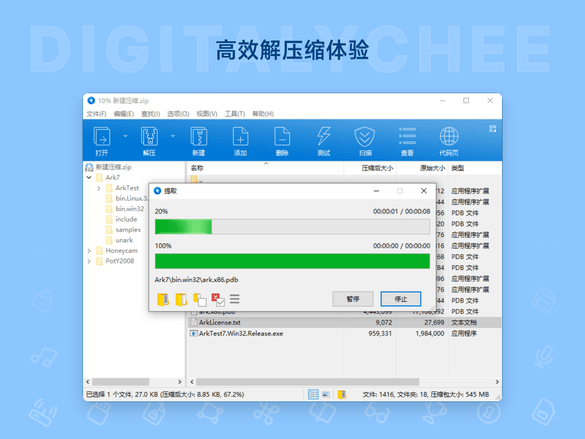

奶昔🥤
@realNyarime
@DIGITALYCHEE 就跟街道上的建筑一样，外观都要一个风格。这样不会显得视觉疲劳，另外作为软件分销商这应该也是任务之一吧（让厂商来做不如咱提供个结算接口，到时候按期给开发商打钱，类似于App Store抽成）




数码荔枝
@DIGITALYCHEE
我们逐步替换新的商品介绍图片。
有时候在想，如果让软件开发商入驻，并直接使用我们的工具生成标准图片 & 商品页，是不是会导致荔枝商店的软件产品鱼龙混杂呢？ https://t.co/tVLBSnIsSt